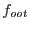

To allow a flexible image formate, the evselect parameters for the final image creation are passed by eimageget.
To allow a convenient creation of mosaic images, the image coordinates can be recalculated (using attcalc) by setting withattcalc = yes and using the nominalra, nominaldec, imagesize parameters. Note, that in this case, an attitude file must be given as input and the SAS_ODF variable must be set properly.
The final OOT images are scaled according to the science mode of the exposure by  (6.3% for full frame mode, 2.32% for extended full frame mode).
The final FWC images are scaled to have the same average count rate in the shielded detector corners. Out-of-time events are respected here. Since the detector corners of EPIC-pn are not read out in large- and small-window model, no images can be created in this case. Also, if EPIC-MOS was not operated in full-frame mode, no image of the central CCD will be created.
This is not the most sophisticated method (see e.g. the ESAS package) but provides a robust and useful approximation for the detector background. Note however, that for small energy bands and/or short exposure times the statistics in the detector corners might be too small. The number of counts are given as output and can be checked.
This method assumes that the spectral variability of the detector background can be neglected within the individual energy bands. Using very large energy bands can violate this assumption. E.g. the relative contribution of electronic noise below 0.5 keV is variable with time. To account for this, it is suggested to create an image for the 0.2-0.5 keV band independently and add the final images later on, if a larger energy band is needed.